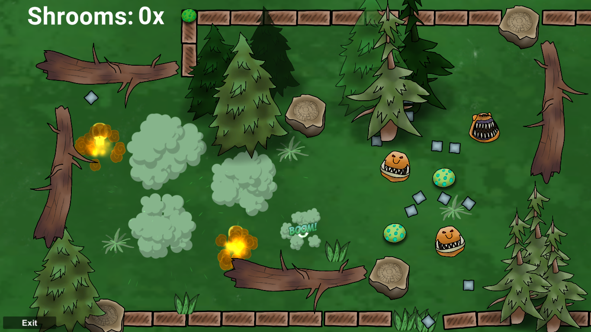

04
mushroom mayhem
- programmer
- code/ui
- 1 week
a game created for the Lost Relic Game Jam in 2022
with the theme of connection.
Mushroom mayhem is a simple, yet challenging game. The game has several levels that get unlocked as the player progresses. The goal is to place a given number of mushrooms in such a way, that it creates a chain explosions and kills the enemies. The player wins the level if all the enemies got destroyed.
This was my very first submission to a game jam in which I have worked in a team, and I gotta say it was lots of fun and I have learned a lot. I believe that working in a team helps a lot with giving my best, as they give support. In this project I had various roles, I was ready to "hop in" into whatever needed to be done at a certain point, but my main role was programming and creating the UI. I have created the whole UI and helped with level design. As for the programming part, I implemented the winning and losing conditions and some part of the explosions, player and enemy behaviour.
The mechanics of the game are easy and simple, yet challenging: the player has to place mushrooms in a way that they are connected to each other (in a specific radius) and close enough to the enemies so that they can damage them. The green area indicates the radius of the mushroom within which it interacts with other game objects and damages the enemies. After placing the available number of mushrooms, the player can select the start of the chain explosion by clicking on one of the mushrooms and pressing the space button. The objects in the environment influence the impact and damage on the enemies, so in some cases the player might need some rounds in levels to figure out which strategy would be the best. The winning conditions is that all of the enemies have to be destroyed; it is not enough to damage them. The player only advances to the next level once every enemy is distroyed, otherwise, they lose.
Takeaways
ability of working with a team
more practice with team work
gained knowledge in programming
communicating and working in a team
successfully submitting a game
Our team successfully completed the game before the deadline and it has 6 levels. The game got an overall rank of 138 out of 394 entries. Moreover, it got several positive feedback and valuable criticism or opinions.
game itch.io page